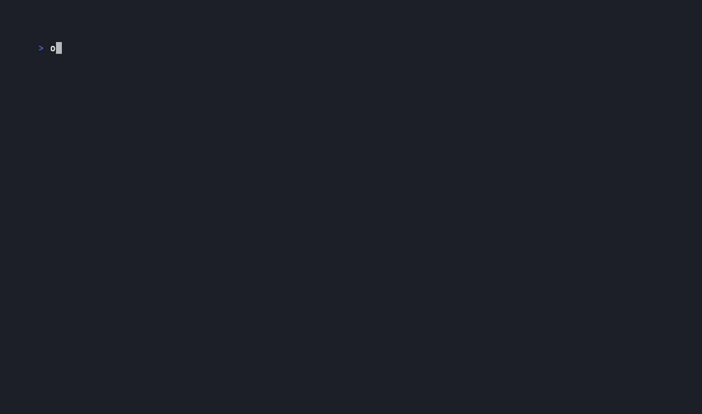

Docs
Document any server
Generate markdown for every tool and resource a server exposes, with a copy-paste example step for each. The fastest way to start a new rondo.
Ocarina is an automation framework for MCP servers. Write a YAML playbook that drives tools across servers, pipes values between steps, and asserts on results, then run it the same way every time. No LLM in the loop.
ocarina docs uvx mcp-server-time # discover a server's tools
ocarina play clock.yaml # run a rondo, assert on results
ocarina validate clock.yaml # check it without calling tools
MCP tool calls return the same output for the same inputs, regardless of which LLM issued them. Write a playbook by hand or record one from a session, then replay it in CI to check the server still returns what you expect and catch regressions, with no API key.
Docs
Generate markdown for every tool and resource a server exposes, with a copy-paste example step for each. The fastest way to start a new rondo.
Play
Execute every step in order. Chain outputs with echo: and grab:. Assert on results with expect:. Exits non-zero if an assertion fails, so it works as a CI step.
Record
Run ocarina as a transparent stdio proxy. Every tools/call request and response goes into a YAML rondo, including sampling/createMessage LLM callbacks from agentic servers.
Requires Go 1.26+.
go install github.com/msradam/ocarina@latestOr download a binary from releases.
See what a server exposes. mcp-server-time needs no credentials:
ocarina docs uvx mcp-server-timeWrite a rondo:
server:
command: uvx
args: [mcp-server-time]
rondo:
- name: time in Tokyo
tool: get_current_time
args:
timezone: Asia/Tokyo
expect:
contains: "datetime"Play it. No LLM, no API key:
ocarina play clock.yaml
# ==> time in Tokyo (get_current_time)
# {
# "datetime": "2026-06-27T09:30:00+09:00",
# "timezone": "Asia/Tokyo"
# }
# PASS: contains "datetime"To capture a live session instead of writing one, see record. For ready-made environments you can clone and run, see Showcases.
A rondo is a YAML file with three parts: keys for variables, a server (or servers) to connect to, and a rondo list of steps. Write one by hand or record it from a live session, then commit it to git.
# Investigate any GitHub repo. Change keys.owner and keys.repo to switch repos.
keys:
owner: modelcontextprotocol
repo: go-sdk
server:
command: npx
args: [-y, "@modelcontextprotocol/server-github"]
rondo:
- name: list recent commits
tool: list_commits
args:
owner: "{{owner}}"
repo: "{{repo}}"
per_page: 5
grab: ".0.sha" # extract the first SHA from the JSON array
echo: latest_sha # capture it into keys for later steps
- name: show latest commit
tool: get_commit
args:
owner: "{{owner}}"
repo: "{{repo}}"
sha: "{{latest_sha}}" # value from the previous step
expect:
contains: "author"
- name: list open issues
tool: list_issues
args:
owner: "{{owner}}"
repo: "{{repo}}"
state: open| Field | Description |
|---|---|
tool | Tool to call (tools/call). |
resource | Resource URI to read (resources/read). |
list_resources | List a server's resources. Output is a JSON array of URIs. |
sleep | Pause for a duration (500ms, 2s) to pace a run. |
server | Which entry in servers to run this step against. Defaults to the first. |
args | Tool arguments. {{key}} interpolates from keys, a prior echo:, or {{env.NAME}}. |
when | CEL condition; the step runs only if it is true. Bare variable names, not {{...}}. |
loop | Iterate over a JSON array, setting {{item}} each pass. |
grab | gjson path into the JSON result (.0.sha, .name), applied before echo. |
echo | Capture the (grabbed) value into a key for later steps. register: is an alias. |
expect | Assertions: contains, matches (regex), equals, is_error, rule (CEL), message. play exits non-zero on failure. |
timeout | Per-step deadline (10s). The step fails if it is exceeded. |
retry | retries, delay, and until: (CEL). Re-run until the condition holds. |
tags | Label the step for --tags / --skip-tags filtering. |
ignore_errors | Continue past a failing step instead of failing the run. |
allow_destructive | Run this step even under --safe. See Safe mode. |
motif | Path to a reusable fragment whose steps run inline. Pass parameters with with:. See Motifs. |
block / rescue / always | Error handling. The block runs until a step fails, rescue runs on failure, always runs regardless. See Error handling. |
| Field | Description |
|---|---|
keys | Static variables, interpolated as {{key}} everywhere. Override at run time with -e key=value. |
servers | A map of named servers (command, args, env). Steps pick one with server:. |
server | A single server block, the shorthand when a rondo talks to one server. |
llm | Captured sampling/createMessage exchanges. Written by record when an agentic server calls back to the LLM. |
Coming from Ansible? tasks: is accepted in place of rondo:, and register: in place of echo:.
One rondo can talk to several servers. Declare them under servers and set server: on each step. A step that omits server: uses the first entry. When more than one server is in play, output and diff namespace tool names by server, like time.get_current_time.
servers:
time: {command: uvx, args: [mcp-server-time]}
fetch: {command: uvx, args: [mcp-server-fetch]}
rondo:
- name: get the time
server: time
tool: get_current_time
args: {timezone: UTC}
- name: fetch a page
server: fetch
tool: fetch
args: {url: "https://example.com"}Give a server a url: instead of a command: to reach a hosted MCP server over the Streamable HTTP transport. Headers are sent on every request, so a bearer token works through {{env.X}}. When a tool returns structuredContent, grab and expect run against that typed JSON instead of the text block.
server:
url: https://api.githubcopilot.com/mcp/
headers:
Authorization: "Bearer {{env.GITHUB_TOKEN}}"
rondo:
- name: who am I
tool: get_me
args: {}
expect:
contains: "login"A motif is a reusable, parameterized rondo fragment. Write a login flow or a setup routine once, then pull it into any rondo with motif: and pass parameters with with:. It is the Ansible role, or the pytest fixture, for rondos.
A motif runs in an isolated scope. It sees its own keys: as defaults, overlaid by the with: values the caller passes. It does not inherit the parent's other variables, so thread in anything it needs through with:.
keys:
zone: UTC # a default, overridable via with:
rondo:
- tool: get_current_time
args:
timezone: "{{zone}}"
expect:
contains: datetimeserver:
command: uvx
args: [mcp-server-time]
rondo:
- name: default zone
motif: motifs/time-probe.yaml
- name: tokyo
motif: motifs/time-probe.yaml
with:
zone: Asia/TokyoA motif runs against the including rondo's servers. See examples/motif.
A step can hold a block: of steps with a rescue: and an always:, the same construct Ansible uses. The block runs until a step fails. On a failure, rescue: runs; if the rescue is clean, the failure is handled and the run continues with exit 0. always: runs either way, so it is where teardown belongs. Paired with a motif for setup, this is a fixture: stand up state, assert against it, tear it down even on failure.
rondo:
- name: provision then verify, roll back on failure
block:
- tool: read_text_file
args: {path: "{{dir}}/config.json"}
- tool: read_text_file
args: {path: "{{dir}}/missing.json"} # fails here
- tool: write_file # never runs
args: {path: "{{dir}}/ok", content: ok}
rescue:
- tool: write_file
args: {path: "{{dir}}/ROLLBACK", content: "recovered"}
always:
- tool: list_directory
args: {path: "{{dir}}"}examples/block-rescue mirrors the canonical Ansible blocks playbook one to one.
docs
Connects to a server and writes markdown for every tool and resource it exposes: a synopsis, an argument table, and a copy-paste example step. The fastest way to learn a server and start a rondo.
ocarina docs uvx mcp-server-time
ocarina docs --out docs/github.md npx -y @modelcontextprotocol/server-githubFlags
--out FILE | Write to a file instead of stdout. Place it before the server command. |
record
A stdio proxy between your MCP host and server. Records every tools/call request and response into a rondo. Also captures sampling/createMessage exchanges when an agentic server calls back to the LLM, stored in the rondo's llm: block.
ocarina record out.yaml uvx mcp-server-sqlite --db-path /tmp/db.sqlite
ocarina record out.yaml npx -y @modelcontextprotocol/server-githubFlags
--no-result | Omit result blocks from the rondo (smaller files, cleaner diffs). |
play
Executes each step in order against the live server. No LLM needed. Values captured with echo: feed into later steps through {{key}} interpolation. Exits non-zero if any step fails or any expect: assertion fails, so it works as a CI step.
ocarina play examples/github-investigation.yaml
ocarina play examples/mcp-smoke-test.yaml # has assertions
ocarina play examples/time-zones.yaml -e owner=acme --tags smokeFlags
--output json | Emit a machine-readable pass/fail report on a clean stdout, for CI. |
--trace | Log every JSON-RPC frame to stderr. |
--dry-run | Print steps without executing them. |
-e key=value | Override a keys variable at run time. Repeatable. |
--tags / --skip-tags | Run only, or skip, steps with the given tags. |
serve
Exposes a rondo as a single MCP tool. The rondo's params: become the tool's input schema, return: names the result, and the rondo's own server: is the downstream it drives. This mints a custom, deterministic, higher-level tool for any MCP server without touching that server's code, the way a stored procedure wraps several queries behind one call. An agent calls it once instead of orchestrating the underlying steps itself.
name: provision_workspace
description: Create a workspace and seed it with config files. One call instead of five.
params:
- name: dir
type: string
required: true
return: listing
server:
command: npx
args: [-y, "@modelcontextprotocol/server-filesystem", /private/tmp]
rondo:
- tool: create_directory
args: {path: "{{dir}}"}
- tool: write_file
loop: '["alpha.conf", "beta.conf", "gamma.conf"]'
args: {path: "{{dir}}/{{item}}", content: "managed by ocarina"}
- tool: list_directory
args: {path: "{{dir}}"}
echo: listingocarina serve provision.yaml # stdio (default)
ocarina serve provision.yaml --http :8080 # Streamable HTTPFlags
--http ADDR | Serve over Streamable HTTP at this address instead of stdio. |
--token | Require a bearer token over HTTP (or set OCARINA_TOKEN). |
--tls-cert / --tls-key | Enable HTTPS. |
--safe | Refuse any tool not marked read-only. See Safe mode. |
--timeout / --max-concurrent | Per-call deadline and concurrency limit. A panic in one call cannot take the server down. |
validate
Checks a rondo against the server's schemas without calling any tools: the tool exists, required args are present, types match, every {{key}} resolves, and the CEL, timeout:, and server: references are valid. Exits non-zero on errors. The pre-flight.
ocarina validate examples/github-investigation.yamldiff
Connects to the live server and compares the rondo's tools against the current schemas. Flags tools that were removed, args that became required, server references that are undefined, and new tools the server now offers. Exits non-zero if a tool the rondo uses is gone. Schema-drift detection for CI.
ocarina diff examples/github-investigation.yamllock
Snapshots each server's full tool schema, including tool descriptions, to a lock file. With --check, compares the live server against the lock and exits non-zero if a tool was removed or its description or input schema changed. A reworded tool description is a breaking change for an agent and a possible tool-poisoning signal, so drift is a failure.
ocarina lock audit.yaml # write audit.yaml.lock
ocarina lock audit.yaml --check # fail if the live schema driftedload
Runs a rondo's tool steps as a load test: many virtual users loop the scenario concurrently, for a duration or an iteration count. Reports throughput and latency percentiles, like k6. A --threshold turns a percentile into a pass/fail gate, so it works as a CI performance check. This measures behavior under concurrency on purpose, so unlike play it is not deterministic.
ocarina load smoke.yaml --vus 50 --duration 30s
ocarina load smoke.yaml --vus 20 --iterations 1000 --threshold p95<500msFlags
--vus | Number of concurrent virtual users. |
--duration | How long to run (ignored when --iterations is set). |
--iterations | Total scenario iterations across all virtual users. |
--threshold | Fail if a latency percentile is exceeded, e.g. p95<500ms. |
hum
Calls a single tool ad hoc and prints the result. Use it to see a tool's real output shape before you write a step around it. Values are coerced to their natural type, so per_page=1 is sent as a number.
ocarina hum uvx mcp-server-time -- get_current_time timezone=UTC
ocarina hum npx -y @modelcontextprotocol/server-github -- list_commits owner=pytorch repo=pytorch per_page=1play --safe and serve --safe refuse any tool not marked read-only in its MCP annotations (readOnlyHint). A step opts back in with allow_destructive: true. This keeps a read-only rondo from making a write when you point it at a server you do not fully control.
ocarina play audit.yaml --safeThis is a guardrail, not a security boundary. MCP annotations are advisory, and a server is free to misreport them, so treat --safe as protection against mistakes, not against a hostile server.
play prints a per-step run and a final tally. Two open output surfaces let other tools consume a run without Ocarina shipping format-specific reporters.
--output json | A structured result: per-step status, message, and duration, plus the run total. Transform it into JUnit, a dashboard, or anything else. |
OTEL_EXPORTER_OTLP_ENDPOINT | Set this env var and the run exports as OpenTelemetry traces (a span per step) over OTLP. Any OTLP backend (Jaeger, Tempo, Honeycomb, Datadog) ingests it. Standard library only, so it adds no dependencies. |
--trace | Log every JSON-RPC frame to stderr for debugging. |
Working rondos in examples/, each verified against a live server.
| File | Server | What it shows |
|---|---|---|
| motif/ | uvx mcp-server-time |
A reusable fragment pulled into a rondo with with: overrides |
| block-rescue/ | server-filesystem |
block / rescue / always, mirroring an Ansible playbook |
| serve/provision.yaml | server-filesystem |
A composite tool: five filesystem calls behind one serve tool |
| fetch-demo.yaml | uvx mcp-server-fetch |
Basic fetch and content capture |
| github-investigation.yaml | server-github |
echo: + grab: to chain API calls, extract SHA from JSON array |
| sqlite-migration.yaml | uvx mcp-server-sqlite |
Stateful workflow: create table, seed rows, query results |
| git-repo-audit.yaml | uvx mcp-server-git |
Local repo audit: log, status, diff, branches |
| mcp-smoke-test.yaml | server-everything |
expect: assertions; use as a CI smoke test |
| sequential-thinking-demo.yaml | server-sequential-thinking |
Multi-step reasoning chain captured as a rondo |
| knowledge-graph-demo.yaml | server-memory |
Create, relate, search, and delete lifecycle with assertions |
| puppeteer-scrape.yaml | server-puppeteer |
Headless browser: navigate, evaluate JS, screenshot |
| time-zones.yaml | uvx mcp-server-time |
Parameterized timezone conversions, [readonly] annotations |
Standalone repositories you can clone and run, each a real working environment for a different MCP server.
| Repository | What it does |
|---|---|
| duckdb-mcp-ocarina | Data integrity, migration, and regression tests against a DuckDB database. Clone and run, no credentials. |
| chrome-devtools-mcp-ocarina | Web health checks through Chrome DevTools MCP. Fail on a console error or a failed request. |
| github-mcp-ocarina | Repo governance as tests through the GitHub MCP server: a license, docs, and history. |
| blender-mcp-ocarina | Automate and snapshot-test a 3D scene in Blender, an app with no external API at all. |
play exits 0 if all expectations pass, non-zero otherwise. No API keys needed.
name: MCP smoke tests
on: [push, pull_request]
jobs:
test:
runs-on: ubuntu-latest
steps:
- uses: actions/checkout@v4
- uses: actions/setup-go@v5
with:
go-version: '1.26'
- run: go install github.com/msradam/ocarina@latest
- run: ocarina play examples/mcp-smoke-test.yamlOcarina works because MCP gives every server the same shape: named tools with typed arguments, reachable over one protocol. Learn the grammar once and you can drive a time server, a GitHub server, a Postgres database, and a 3D modeling app with the same YAML. You point Ocarina at a server, fill in the calls, and it runs them the same way on every execution. That part is solid today.
The friction is in what comes back. These servers were built so a model could read the output and decide what to do next, so many of them answer in prose rather than data. mcp-server-fetch returns markdown. mcp-server-sqlite returns the Python repr of a row, single quotes and all. The arguments are typed; the results often are not. Ocarina smooths over the common cases, and will parse that Python repr before a grab: runs, but when a server replies in free text, pulling a clean value out of it stays awkward. That ceiling belongs to the server, not to Ocarina.
Errors are uneven for the same reason. The spec lets a tool flag a failure with isError, but plenty of servers report trouble as ordinary text and never set it. Ocarina catches a misspelled tool name or a missing required argument by checking the live schema before it calls, so those fail loudly. A server that returns table not found as a cheerful string is harder to catch on its own, and that is what an expect: assertion is for.
So the honest scope. Ocarina is an automation framework for the MCP servers that behave like clean RPC, and a deterministic test harness for the ones that do not. Today that means smoke tests in CI and scripts that chain a few well-behaved servers. Recording a session and replaying it without a model works now too. The reach grows as the ecosystem matures and servers return more structure. The Blender demo on the home page is the far end of what is already possible. The rough edges above are the near end you will actually hit.
It does not score LLM outputs, compare models, or track token costs. It connects to the real server on every play run, so a broken server breaks the replay. play runs one linear pass with no scheduler and no state carried between runs. The output is stdout and an exit code, a structured JSON report, or OpenTelemetry traces.
GitHub · Releases · MIT license · Whistle icon by Alessio Capponi / Noun Project (CC BY 3.0)